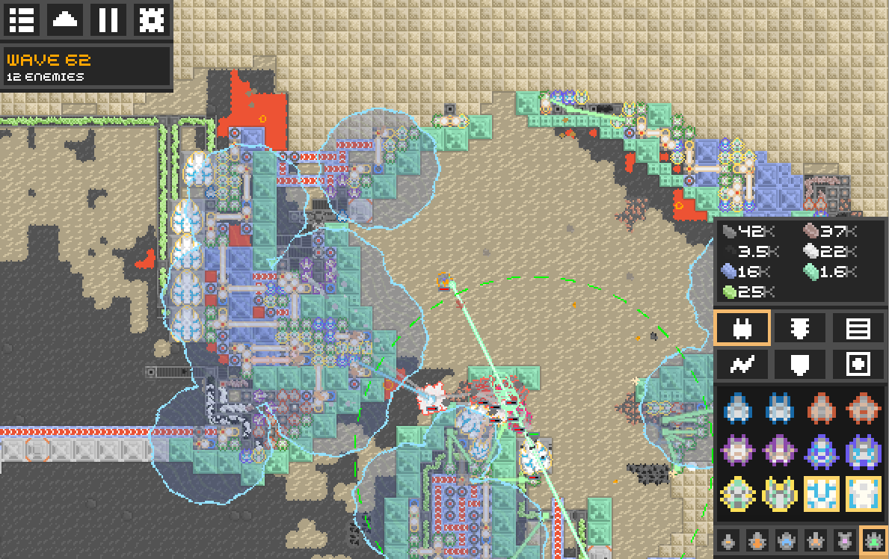

References / Software / 449
Mindustry
Anuken’s open-source factory and tower-defense game builds conveyors, turrets, ore fields, and its menus from crisp pixel tiles and a bitmap interface face.
- Source
- GitHub: Anuken/Mindustry
- Creator
- Anuken and Mindustry contributors
- Made
- Repository created 2017; screenshot of version 3.5, January 2019
- Style
- Pixel Art (agent-proposed, not yet reviewed by a person)
- Moods
- Game-like, crisp, busy
- Evidence
- Inspected Mindustry 3.5.png on Wikimedia Commons, 1189 × 748 px, a screenshot taken by the uploader on 26 January 2019.
- Reviewed
- Rights
- Open license, stored. License: GPL-3.0. Rights policy

Context
Wikipedia describes Mindustry as a free and open-source real-time strategy, factory management, and tower defense game developed and published by Anuken under the GNU GPL v3. Wikipedia.
The repository describes “The automation tower defense RTS” and carries the GPL 3.0 license. GitHub.
Observed
- A top-down map of beige sand, a dark gray rock field, and red-orange ore, each a field of square tiles with stepped edges.
- Blocks in teal, blue, and purple are linked by conveyor lines with small item pixels on them.
- At top left, square icon buttons and a dark panel read “WAVE 62” in orange and “12 ENEMIES” in white, in a bitmap face.
- At right, a dark panel lists resource counts (“42K”, “3.5K”) and a grid of ship sprites in square frames, with one selected frame outlined in orange.
- Translucent blue circles, a dashed green circle, and green beam lines are drawn over the tiles.
Why it belongs
Mindustry shows that the style scales to dense strategy screens: a strict tile grid and a bitmap face keep many small parts legible.
The smooth range circles are game information, not decoration, but they break the one-grid rule.
Borrow
Set counters and labels in a bitmap face inside dark square panels, with one orange highlight for the selected item.
Give each material one flat color family so that a dense map stays readable.
Measured
Machine-extracted by tools/image-traits.py on . Full measurement.
- Mean chroma
- 0.13
- Palette
- #ada183 19%
- #545454 13%
- #bbaf8c 10%
- #d2c5a5 9%
- #262626 5%
- #84c4ae 4%
- #60605f 3%
- #70a399 3%

